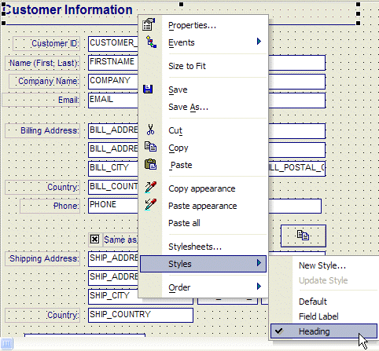

Assigning a Style to an Object
Just like in a word processor, where you can assign a style to a paragraph (for example, Heading1, Heading2, Body) etc., Alpha Five lets you define multiple styles for each object type. By right-clicking on an object, you can assign a style. For example, in the image below, the text object that is currently selected has a style of "Heading". Other text objects on this form have a style of "Field Label".

By changing the definition of the "Field Label" style, all of the field labels on the form will automatically take on the new look defined by the edited style.